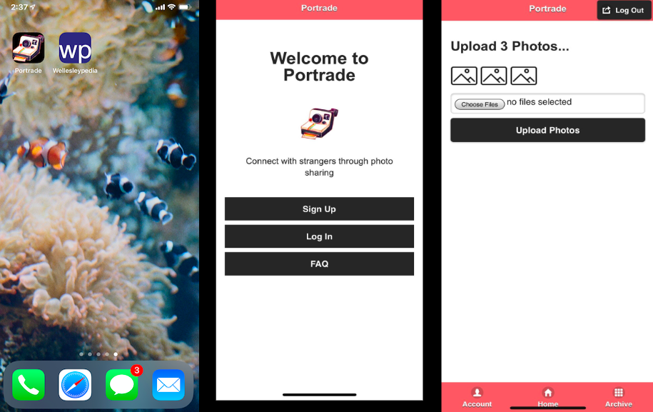
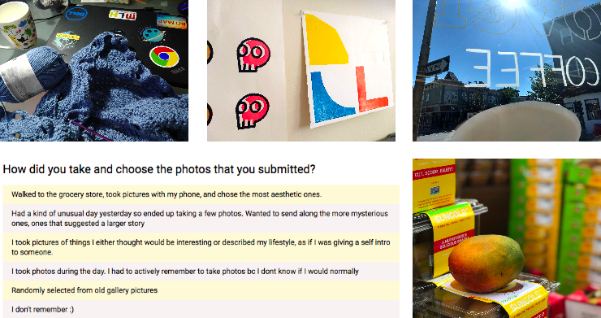
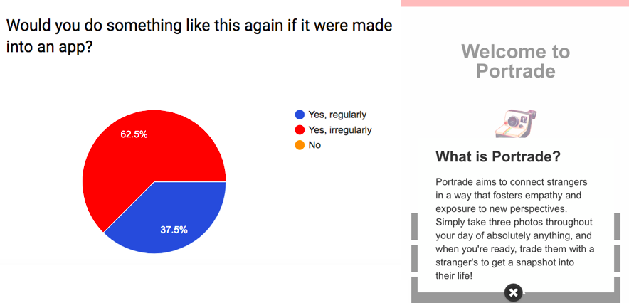

Portrade
Anonymous photo sharing UI/UX design and researchSummer 2018, Berkman Klein Center for Internet & Society
Working with the Berkman Klein Center and the Harvard Library Innovation Lab, I was tasked to come up with my own project idea and dive in with the resources at hand. The topic I chose:
3 Photos, 2 Strangers, 1 Day: Perspective and Empathy Through Paired Anonymous Photo Sharing.
My three-phase study explored privacy and behavior in photo sharing from the standpoint of user experience and interaction. Each phase involved users being asked to exchange photos of their day with no context. The aim was to provoke empathy, self-reflection and broader perspectives by analyzing user behavior and patterns in (1) a mobile experiment, (2) an online-based experiment and (3) a mobile app prototype, Portrade.
Technology used
- JQuery
- HTML/CSS
- PHP
- Heroku


Why photo sharing? As the global social and cultural norms around privacy and emotional engagement have shifted, the mainstream uses of photography have expanded to include the propagation of a curated self-identity as well as of the vicarious experience of multiple everyday realities, i.e. minute-by-minute “digital storytelling”. I wanted to know: how do users curate their digital presence through photography? How do users perceive themselves and others through shared photos?
My project culminated with the development of Portrade, an anonymous photo-sharing app. Users upload 3 photos and immediately receive 3 photos from another user in return. Their photos are then stored in the server to be sent to a future user. The app includes a side-by-side photo comparison archive.
Phase 1
The Phase 1 studies ran for three days with 10 participants per day from the United States, United Kingdom and Germany. Participants were randomly paired and told to take 5 photos throughout their day. They were then tasked to send the 5 photos to their paired participant via WhatsApp, and to not exchange text or self-identifying information. No guidelines were given as to the content or editing of the photos themselves. Day 1 and Day 2 were run with mutual pairings, while Day 3 was run with non-mutual pairings. 150 photos were shared in total.
Participants in the Phase 1 WhatsApp studies tended to share social photos above all other categories, with 63 of the 150 photos (42%) showing people or social gatherings, followed by 27.33% landscape, 12.67% food, 10.67% object and 7.33% animal photos. Keywords: Social Photos and Contextualization
Phase 2
The Phase 2 studies consisted of a similar task to the Phase 1 studies, with the main differences being the use of a desktop platform versus a mobile one, and of indirect communication via a centralized form versus direct messaging. Phase 2 was conducted over Google Forms, with participants asked to take 3 photos (reduced from 5 due to Phase 1 user feedback) throughout their day and upload them.
In Phase 2, no participants censored faces or edited text onto their photos. Accompanying text captions were entirely prevented due to the Google Form formatting, making Phase 2’s submissions purely photo media. Over half of the 36 shared photos (52.78%) were landscape images, followed by 22.22% social, 13.89% object, 11.11% food and 0% animal photos. Keywords: Landscape Photos and Motivation

Phase 3
For Phase 3, I built anonymous photo-sharing app Portrade based off of Phase 1 and Phase 2 feedback. Portrade retained the 3-photo, centralized aspects of Phase 2 and the mobile, non-mutual pairing aspects of Phase 1.
The next step would be to further develop Portrade to incorporate both mutuality and immediacy, taking into consideration delays caused by time difference and the size of the existing user pool.
